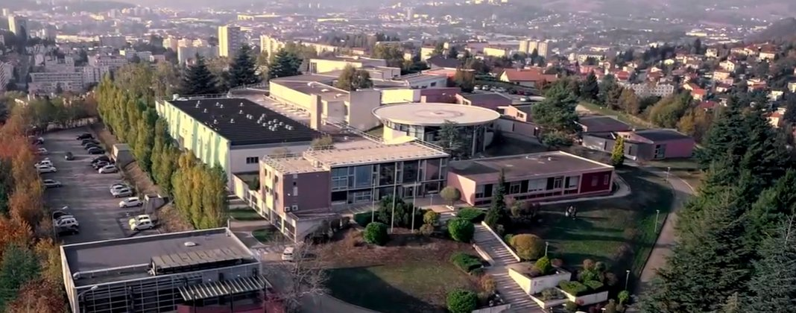

CurrentSept 2025 – 2027 · France
MSc (Mechanics) Sustainable Manufacturing and Advanced Technologies (M1 → M2)
École Centrale de Lyon (ENISE) · École des Mines de Saint-Étienne (EMSE)
Core courses
Ongoing research
Exploring the limits of 3D microscopes for the characterisation of surface topographiesPreparatory research project · LTDS (Centrale Lyon – ENISE) · Prof. Frédéric Cabanettes OpticalFocus variationConfocalSEMAFM